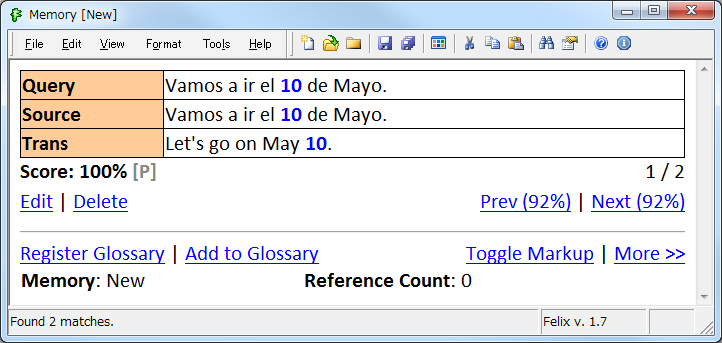

6. The Placement Feature¶
You can use the Felix placement feature to automatically insert numbers, glossary terms, or rule-based substitutions in your translations. See Placements for details on how to enable each of the placement features.
6.1. Number Placement¶
This feature replaces numbers in the translation. For example, say you have the following entry in your translation memory:
Source: Vamos a ir el 5 de Mayo
Translation: Let's go on May 5
Then if you later get a source segment:
Vamos a ir el 10 de Mayo
Felix will suggest the following as the translation, even though you don’t have that entry in your memory:
Let's go on May 10
Numbers “placed” in this way are shown in blue in the match window. A gray letter “P” also appears next to the score, to denote that this is a placement match.

Number Placement
6.2. Glossary Placement¶
This feature replaces glossary matches in the translation. Say, for example, you have the following translation in your TM:
Source: Go to YYY
Translation: Vaya a BBB
Furthermore, say that you have the following entries in your glossary:
Source Translation YYY BBB ZZZ CCC
Now, say that you have the following query:
Go to ZZZ
Felix would be able to recognize that ZZZ should be translated as CCC, and offer you this translation based on your existing TM:
Vaya a CCC
6.3. Rule-based Placement¶
This feature inserts substitutions based on rules that you specify. The rules are based on regular expressions.
Note
You can find information about regular expressions, including tutorials, at the Regular-Expressions.info website.
For example, if you specify the following rule:
Source: (\d+)(\d)億円
Translation: \1.\2 billion yen
Then given the following source:
Source: 123億円
The rule above would yield the following substitution:
Translation: 12.3 billion yen
Furthermore, if you had the following translation in your TM:
Source: 85億円を投資しました。
Translation: Invested 8.5 billion yen.
Then given the following query:
22億円を投資しました。
Felix would suggest the following placement:
Invested 2.2 billion yen.
The example above is similar to the number placement feature, except that the number placement feature is not able to understand movement of decimal places. But the rule-based placement feature is much more powerful than number placement. For example, you could use it to place phone numbers, dates, and just about any type of formatted text.
To manage your rules, select Tools ‣ Rule Manager... from the Felix memory menu. This calls up the Rule Manager. See The Felix Rule Manager for details.